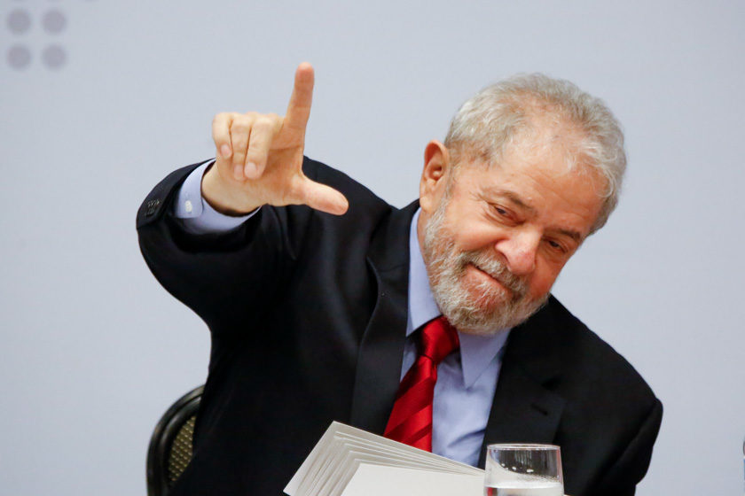

Luiz Inácio Lula da Silva subiu ao palco montado em um parque local para falar a uma multidão entusiasmada. O ex-presidente era conhecido por seu compromisso com a educação, e nesta ocasião, ele tinha uma surpresa especial para compartilhar.
Diante de milhares de apoiadores e curiosos, Lula começou seu discurso.
"Meus amigos e amigas, hoje estou aqui para compartilhar uma ideia que acredito ser crucial para o futuro do nosso país. Todos nós sabemos que a educação é a chave para um Brasil melhor e mais justo. Por isso, estou propondo a implementação do quarto ano do ensino médio em todo o país!"
A multidão irrompeu em aplausos e gritos de apoio. Lula continuou: "O quarto ano do ensino médio permitirá que nossos jovens se preparem ainda mais para os desafios do mundo moderno. Eles terão a oportunidade de aprofundar seus conhecimentos e adquirir habilidades adicionais que serão valiosas em suas vidas futuras."
Ele explicou que o projeto incluiria um currículo diversificado, com ênfase em habilidades práticas, artes, ciências e tecnologia. Além disso, o governo forneceria recursos adicionais para as escolas, garantindo que os alunos tivessem acesso a uma educação de qualidade.
"A educação não é um gasto, é um investimento", enfatizou Lula. "Estamos investindo no futuro do Brasil, em uma geração de jovens preparados para enfrentar os desafios do século XXI."
A proposta de Lula gerou debates e discussões em todo o país, mas também inspirou um movimento nacional em prol da educação